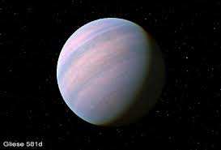

Kepler-186f
Kepler-186f is an exoplanet orbiting the red dwarf star Kepler-186, located about 500 light-years from Earth in the constellation Cygnus.
Read more on Wikipedia

Gliese 581d
Gliese 581d is an exoplanet that orbits the star Gliese 581. It is located 20.3 light years from Earth in the Libra constellation.
Read more on Wikipedia
Proxima Centauri b
Proxima Centauri b is an exoplanet orbiting the star Proxima Centauri, the closest star to the Sun. It is 4.24 light years away from Earth.
Read more on Wikipedia